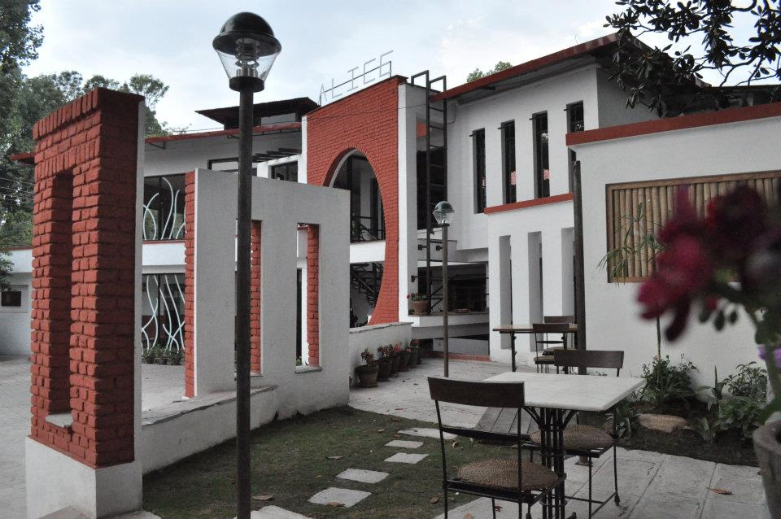

Discover the story behind our restaurant. From our humble beginnings to becoming a culinary destination.
Alice It is a lovely couched restaurant with greenery all around which adds to the serenity of the place has an apt slogan "A place for family". The balanced indoor and outdoor space seamlessly with indoor space flowing outdoor adopts Japanese style of design and decor, while the hall is in traditional Nepalese style which can be used for seminar and conference. Alice Restaurant accommodates more than 160 people at a time. It is a set of flowing water with the fusion of Japanese and Thakali decor and has a lovely play area for the amusement of kids. Specially designed coffee bar at the ground floor is stress reliever with the pleasing sound of falling water and the luring coffee ships like espresso or ice cappuccino. Your evening can turn out memorable with the amalgamation of wine and pasta. The food is a prime specialty at Alice offering, Japanse, Chinese, Italian and Continental cuisines and not to forget our very own Thakali set for lunch and dinner. Other novelties include Green Mo:Mo and Phapar Mo:Mo as fast food and Samma Siyo Yaki. You can twingle your taste buds with Susi and Maki-Susi which is beautifully and artistically decorated.About Us
